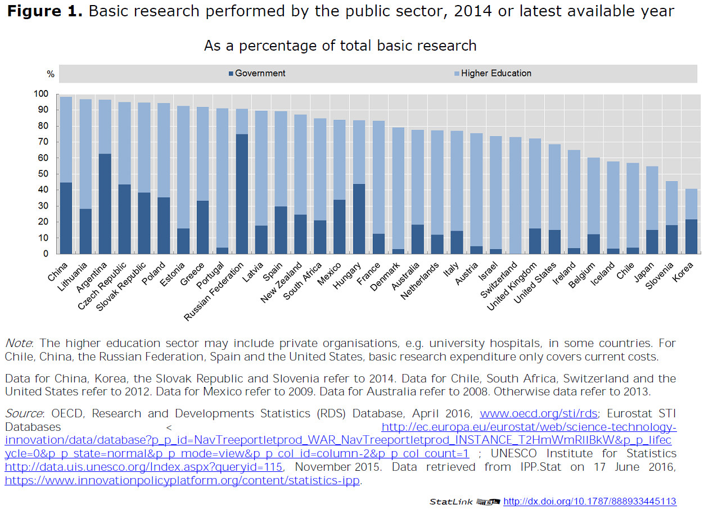

Public research missions and orientation

Public research plays a key role in innovation systems by providing new knowledge that can enhance the development of new technologies for societal or economic purposes. In this context, universities and Public Research Institutes (PRIs) fill a specific niche in undertaking longer-term basic research that is unlikely to have immediate economic returns (OECD, 2010a). Although the volume of public R&D is less than 30% of total OECD R&D (OECD, 2014a), universities and PRIs perform more than three-quarters of total basic research (Figure 1). They undertake also a considerable amount of applied research and experimental development that has more immediate potential for translation into tangible societal benefits.
 [1]
In most OECD countries the majority of public research is carried out by universities, which are publicly owned, publicly operated or primarily funded with public money (IPP, 2014). Universities have three inter-related missions for research, education and societal benefit (including innovation). In many countries they have a considerable degree of autonomy in how they balance and implement these missions, which is influenced by both the size and relative wealth of the Institutions - factors that vary enormously even within individual countries. In most countries, a small percentage of the Universities carry out the majority of the research. These institutions are a critical part of any STI system but one over which Governments have limited direct control.
Public Research Institutions are equally diverse and can be ascribed to 3 broad categories: i) scientific research institutes, which carry out largely basic research; ii) Government laboratories, which serve the needs of specific government departments, and; iii) research and technology organisations (RTOs) that have a specific innovation function. Their missions, activities, governance and performance vary across these categories and the relative mix and total number of PRIs differs enormously across countries (OECD, 2011). Where the national RTO sector is relatively weak, there is an increased emphasis on the role of the University sector in innovation. As well as being a critical part of national innovation systems, Universities and PRIs can shape a region’s capacity to innovate by attracting R&D-intensive firms or the R&D facilities of multinationals enterprises (MNEs).
The funding for public research, i.e. that conducted in Universities and PRIs, comes from a variety of different sources, including ministries and public research funding agencies, private foundations, philanthropies and charities and the business sector. Crowd-sourcing is also a growing source of support in some research areas. Again the mix of funding depends on the nature of the research performing institution and the country. In most cases public funding is a very significant - normally the majority - source of research income. This public funding is the major lever for influencing the directions and nature of public research.
However, even public research funding is aligned with different missions and aims, depending on its source, and is distributed by a variety of different mechanisms with different time scales. In some countries, the majority of public research funding for Universities is given as institutional block grants, in others the majority is awarded directly to individual researchers or teams as competitive grants.
Public research is actually very competitive. Researchers compete with each-other for grants, students, positions and prizes; institutions compete with each other in international league tables for status and reputation; regions and countries compete for prestige and returns on innovation. Competition is a major driving force for research although hyper-competition may limit openness and cooperation and distort research practices.
Whilst there is a clear need for international collaboration to address global challenges, and many of the larger Universities are now functioning as multi-national enterprises with campuses in multiple countries, multi-lateral research strategies and funding mechanisms are limited. The EC is coordinating research at the European level and private foundations are increasingly taking the lead in setting the global agenda in areas such as health and energy. National research agendas and policies increasingly need to be globally aware.
Public research faces several major challenges that are accentuated by the steeply increasing costs of scientific equipment and infrastructure and pressures on national budgets:
- Translating science into societal benefits: While much publicly-funded scientific research remains at some distance from commercial exploitation (OECD, 2010a), universities and PRIs are increasingly expected to transfer knowledge to industry and society, and to adapt their governance arrangements, incentive frameworks and academic culture to achieve this. Evaluation and socio economic impact assessment are gaining in importance across all levels of the public science enterprise.
- Globalisation, cooperation and competition: The investments required to keep pace with technological change in many fields of research have increased, as has global competition for increasingly mobile research assets, including talent. Universities and PRIs have to compete for resources and talent on international markets. As science becomes increasingly open, who benefits from knowledge spill-overs and innovations, i.e. what are the returns for national investment and international cooperation, becomes an important policy consideration (see also the Policy Profiles on the Internationalisation of Universities and Public Research and International Mobility of the Highly Skilled).
- Inter-disciplinarity and complexity: Many of the most significant break-throughs in science have come at the interfaces between disciplines. Complex global societal challenges inherently require research that combines traditionally distant academic fields. Yet, Universities, peer review panels, funding agencies and scientific journals are overwhelmingly organised along disciplinary lines that are not easily shifted.
- Balancing long-term and short-term perspectives: Public research needs to fulfil multiple needs, which are inter-dependent. From an STI perspective, basic research underpins the development of disruptive breakthrough technologies but its full impact can take decades to be realised. Incremental increases in knowledge, applied research and experimental development can generate more predictable shorter-term returns. Both are necessary but may require different research environments, actors, skills and investment strategies.
- Selecting priorities: As scientific research progresses it also expands and opens up new and exciting opportunities. Making strategic choices on future priorities across very different fields is a challenge for research institutions and governments alike. Likewise, the choices between 'big science' or single investigator driven projects or between infrastructure and personnel can be extremely difficult. Effectively balancing resource distribution between different fields of science, between long-term and short-term needs, between big science and single investigators, between infrastructure and personnel, between national and international needs is a continuous policy conundrum.
- Maintaining quality and trust: In recent years a number of high-profile cases of scientific misconduct and fraud have raised concerns about the integrity of academic research. This has been compounded by the inability to reproduce a number of supposedly break-through scientific findings (Begley and Ellis, 2012). With the growth of the World Wide Web, the scientific enterprise is increasingly public and susceptible to critical questioning. At the same time the digitalisation of science has increased the opportunities for citizens to actively participate in research. The growth of citizen science and crowd sourcing is changing many fields of research and brings with it new challenges, including issues of quality assurance. (see also the OECD Policy Profile on Public Engagement in STI Policy).
- Sustainable career paths: In many OECD countries the public research enterprise is dependent on PhD students and post-doctoral researchers, who have no long-term job security. Moreover the prospects of a tenured position are frequently limited and tenure itself has become a relative term with many principle investigators expected to recover a proportion of their salaries via competitive grant funding. The lack of clear and sustainable career paths could be a disincentive to embark on a career in academic science and a particular challenge for women (see also the Policy Profile on Research Careers).
Major aspects of public research policy reflect the challenges described above and include: the governance of the research system and development of joined-up visions and strategies; the structuring of research organisations - universities and PRIs; the development of human and capital infrastructure; and, the selection and implementation of research priorities. The financing of public research, which directly relates to all of these, is the topic of another policy profile of the STI Outlook. And the important policy issues relating to Open Science and the commercialisation of research are addressed in other profiles. Other pertinent issues are discussed in more detail in other policy profiles (see the policy profiles, “Patent policies”, ”Cluster policy and smart specialisation”, the “Internationalisation of public research” and “Research careers”).
The governance of public research operates at multiple levels. In most OECD countries there is a process for developing a national science (and innovation) strategy and some kind of national co-ordination mechanism(s). Governments and/or national funding agencies orchestrate public research by defining research priorities at the national level and allocating resources accordingly. They influence autonomous Universities and PRIs through performance agreements, performance assessment processes and contracts, which are linked to the allocation of public resources. A similar picture is played out at the regional level, with some OECD countries having much of their research being supported via regionally or federally allocated funds. Research performers have their own governance mechanisms that enable them to make choices linked to internal allocations of resources. The presence of the business sector and other societal stakeholders in high-level advisory bodies or on institutional executive boards helps introduce a market and societal benefits perspective in the design and implementation of public research policy (see the policy profile on “Strategic public/private partnerships”). Ex ante evaluation and impact assessment can be used to inform policy learning, reinforce accountability and reallocate public resources in the most efficient way.
Creative and productive research environments are critical for the research enterprise. As described previously, the university and PRI sectors are very heterogeneous and play different and complementary roles in national innovation systems. Ensuring an effective and appropriate balance between these different institutions is an ongoing challenge in all countries. As the research enterprise expands and budgets are under pressure, there is an international trend to focus investment in Centres of Excellence (OECD, 2014b). These centres can also be a venue for bringing different disciplines together and/or addressing complex societal challenges.
Scientific research is itself highly dependent on technological development and increasingly expensive research infrastructure. This includes large international infrastructures but also smaller scale technology platforms, libraries and information archives, all of which need to be continuously updated and/or renewed (IPP, 2014). A considerable proportion of scientific investment is in distributed infrastructures and e-infrastructures and the sustainability of these facilities, including support for operating costs and skilled personnel, is an important policy issue.
Ultimately scientific progress is dependent on great minds. Maintaining national research competitiveness implies nurturing and attracting new talent. The attractiveness of research careers depends on research conditions (e.g. academic freedom, early-stage mentoring, access to high-quality research infrastructures, R&D support staff, international visibility), working conditions (e.g. remuneration, tenure track, work-family balance), and public awareness of career opportunities in science (e.g. role models in schools) (see the policy profile on “Research careers” ). The market-place for scientists is global and integrating scientific mobility into national strategies and policies is increasingly necessary (see the policy profile on “International mobility of the highly skilled”).
The development of research strategies and selection of priorities, mirrors to some extent, mechanisms for the governance of science. Governments, funding agencies, research institutions and individual researchers all play a role in deciding what research is actually conducted. Whilst academia as a whole is probably the main determinant of research priorities, other societal stakeholders, including industry, also have an influence - the extent of this influence being dependent on the inclusiveness of the multi-level governance.
Public research policy has been one of the STI policy areas between 2014 and 2016 with the largest number of changes (Figure 2). Particular efforts have been made for encouraging interdisciplinary research and finding alternative sources of funding as public R&D budgets plateau or recede (see also chapter 4 on Recent Trends in STI and policies). Trends in the funding of public research are discussed in the policy profile on “Financing public research”.
The public research landscape is changing in many OECD countries (Figure 2). The prevailing wisdom is that co-locating research, education and innovation activities has significant co-benefits and that size matters. Universities are merging and/or taking the place of PRIs as the main performer of public research. Higher education expenditure on R&D (HERD) has increased steadily over the past decades in the OECD area as a whole as government expenditure on R&D (GOVERD) has declined (Figure 3).
 [2]
[2]
 [3]
[3]
Where PRIs continue to thrive, they are encouraged to build stronger links with Universities. Many countries are implementing significant reforms to their STI systems and introducing monitoring and evaluation mechanisms.
- Several countries are reforming their Universities. Belgium has been undergoing a series of reforms, including merger of Universities and PRIs, for the past decade. A similar integration of PRIs into Universities started in Austria in 2011. Recent reforms have led to the merger of several higher education institutions (HEIs) in Norway and tightened regulation of University accreditation. In Portugal, the two major Universities in Lisbon have been merged. Chile is also planning a reform of its HEI sector. Japan has introduced a new Programme for Promoting Enhancement of Universities that provides support for employing research management personnel.
- In parallel to the structural changes of Universities, Austria has introduced performance contract for Universities that include commitments on issues such as career paths. Likewise, Norway has introduced institutional performance contracts in some institutions.. Sweden and Croatia, in line with several other OECD countries, notably the United Kingdom, have introduced performance assessment into the allocation of 'block funds' for Universities and PRIs. A new law for public research in Greece links research funding to performance assessment and Ireland has introduced a System Performance Framework, 2014-2016 as part of new National Strategy for Higher Education up to 2030.
- Whilst socio-economic impact assessment is increasingly important from a science policy perspective, for the time-being the most often used quantitative indicator of public research performance is publication output (together with patents for innovation, see the OECD Policy Profile on Patent Policies) In this regard it is notable that in several emerging economies the publication of scientific results still needs to be promoted. Both South Africa and Colombia have recently taken measures to incentivise and improve the quality of scientific publication.
New national strategies or science-plans have recently been developed in many OECD countries and at the EC level and some of these have led to major new funding initiatives. Major Global policy drivers that were agreed multi-laterally in 2015 include the UN Sustainable Development Goals and the COP21 agreement on climate change. These, and the global societal challenges that they encompass, will have a significant and universal influence on priorities for research and innovation in the coming years (see the STI Outlook 2016 chapter on “the future of science systems”) and this is already reflected in many national strategies and initiatives. A characteristic of several of these new initiatives to address societal challenges is that they are aimed at multiple research providers - Universities, PRIs and industry and use a variety of governance arrangements and support mechanisms, ranging from support for research Chairs (South Africa) to major interdisciplinary programmes or Centres of Excellence (Finland, New Zealand).
- The European Union's Horizon 2020 research programme has a strong focus on societal challenges and this has acted as a federator for matching national strategies in several European countries, including France and Ireland.
- The Netherlands' new National Research Agenda was published in November, 2015 and provides a framework for researchers, knowledge institutions, civil society organisations, industry and government organisations to join forces and collaborate in contributing to solutions for societal challenges and economic opportunities.
- Japan launched its 5th Science and Technology plan, 2016-2020 which aims to make it the most innovation-friendly country in order to achieve sustainable growth and social improvement and contribute to solving global problems. Other countries, such as Spain and Turkey have developed similar national STI strategies that have a focus on innovation to address societal challenges, including in these two cases major initiatives on renewable energy.
- The UK has announced a major new Global Challenges Research Fund that will build on national research strengths across all disciplines to help meet social, environmental and health challenges across the World.
Breaking down disciplinary barriers has attracted considerable policy attention over the past couple of years, partially in response to the grand societal challenges but also in an effort to promote the development of disruptive technologies and social innovation. This trend towards increasing inter-disciplinarity and trans-disciplinarity is reflected both in the choice of strategic priorities and in a re-structuring or bringing together of different research agencies and actors.
- Belgium has launched a combined initiative on nanotechnology and biotechnology that brings together PRI, University and industrial actors. Sweden is implementing a Challenge Driven Innovation initiative that brings together multiple public and private sector actors to co-design and co-produce research that addresses societal challenges.
- The overall objective of the recently established French University Institute is to encourage high-level research and interdisciplinarity in universities. Selected junior and senior laureates are awarded an endowment for their research activities and relieved of part of their teaching duty. The French national research strategy emphasises the importance of interdisciplinarity in areas such as environmental change and systems biology.
- Italy is one example of a country that has implemented a new 'bottom up' interdisciplinary research initiative. Norway and Iceland are experimenting with new review and selection mechanisms, such as 'sand-pit' proposal development in which potential future applicants are initially brought together in a brain storming workshop. Such mechanisms are designed to help circumvent the biases in traditional peer review of interdisciplinary proposals. Recognising the need for social as well as technological innovation to improve societal well-being, Norway has opened a new Centre for Research on Right-wing Extremism, Hate Crime and Political Violence.
- Concurrent with the publication of the Netherlands' new National Research Agenda, changes to the structure of the main national research funding agency (NWO) were announced, with the specific intention of promoting inter-disciplinary science. A recent review of the 7 UK research councils has recommended that they be more closely integrated, with a similar aim. In 2014, Korea introduced a new National Research Council for Science and Technology that combined the previously separate responsibilities for fundamental and industrial research. In Japan, a new Agency for Medical Research and Development was created in 2015 with a remit to integrate the interests of different ministries and stakeholders.
The target and focus of public research have evolved in recent years as missions and mandates change in response to wider economic and political developments and this is reflected in national science strategies However, the research community, which is the major player in the governance of public research, has its own scientific interests and priorities. This mix of influences translates into specific research priorities that have much in common across countries but also many distinctions.
- Climate change and renewable energy are key priorities in the EC Horizon 2020 research programme and this is a reflection of national priorities and research funding allocations in all OECD countries. As discussed above, other complex societal challenges, ranging from health pandemics to ecosystem services, which require interdisciplinary approaches, feature in the majority of national research agendas. Most of these explicitly recognise the need for greater international cooperation. One example, is the new Italian Partnership for Research and Innovation in the Mediterranean Area (PRIMA), which will focus on food and water related issues.
- Big data and Open science, which are discussed in more detail in another section of the Outlook, are the focus of new research initiatives in several OECD countries. Thus, Sweden has a big data and digitalisation initiative, the UK has a data for discovery initiative and the Netherlands plans to increase investment in quantum computing.
- Brain research and ageing, including dementia, are research priorities in many countries. The USA and Europe have recently launched ambitious 'big-science' brain initiatives and a number of other countries have increased investment in neuroscience.
- A number of countries, including UK, Estonia and the USA, are starting major cohort studies to explore the links between genetic and environmental determinants and disease. In the USA this is linked to a major precision medicine initiative.
- Stem cell research and regenerative medicine are shared priorities across of a number of countries. Japan launched a Research Network for Realization of Regenerative Medicine in 2014 with the aim of being the first country to effectively implement stem cell therapies. In a similar way the newly established Berlin Institute of Health will focus on the translation of basic research into medical applications.
Initiatives in all of these national and international priority areas are invariably associated with significant investments in research infrastructure. The USA is proposing a 10% increase in its 2016 budget for public research infrastructure. Many European countries, including Croatia, Denmark, Ireland, Greece, Turkey and South Africa are developing, or have recently completed, new infrastructure roadmaps. In Europe these are aligned via the European Strategic Forum on Research Infrastructures (ESFRI) and there is an expanding number of jointly-funded European Research Infrastructure Consortiums (ERICs). Infrastructure planning and review exercises are sometimes associated with new laws and/or governance mechanisms - Korea has introduced a Committee for Joint use of Infrastructure to promote sharing of infrastructures in public research institutes. The potential of major research infrastructures to help build productive links between academia and business is of interest to many countries. In the UK there is major investment in two national science and innovation campuses developed around shared large-scale facilities.
Begley, C. G., and Ellis, M. E., 2012. “Drug Development: Raise Standards for Preclinical Cancer Research”, Nature, 483: 531–533.
EC (European Commission)/OECD (forthcoming), International Database on Science, Technology and Innovation Policies (STIP), edition 2016, www.innovationpolicyplatform.org/sti-policy-database [4].
Innovation Policy Platform (IPP), module on Universities and Public Research Institutes, available at www.innovationpolicyplatform.org/content/universities-and-public-research-institutes?topic-filters=11382 [5].
Kergroach, S., J. Chicot, C. Petroli, J. Pruess, C. van OOijen, N. Ono, I. Perianez-Forte, T. Watanabe, S. Fraccola and B. Serve, (forthcoming-a), “Mapping the policy mix for innovation: the OECD STI Outlook and the EC/OECD International STIP Database”, OECD Science, Technology and Industry Working Papers.
Kergroach, S., J. Pruess, S. Fraccola and B. Serve, (forthcoming-b), “Measuring some aspects of the policy mix: exploring the EC/OECD International STI Policy Database for policy indicators”, OECD Science, Technology and Industry Working Papers.
OECD (2010a), Performance-based Funding for Public Research in Tertiary Education Institutions: Workshop Proceedings, OECD Publishing, Paris. http://dx.doi.org/10.1787/9789264094611-en [6].
OECD (2010b), “Main Trends in Science, Technology and Innovation Policy”, in OECD Science, Technology and Industry Outlook 2010, OECD Publishing, Paris. http://dx.doi.org/10.1787/sti_outlook-2010-6-en [7].
OECD (2011), Public Research Institutions: Mapping sector trends, OECD Publishing, Paris. http://dx.doi.org/10.1787/9789264119505-en [8].
OECD (2013b), “Higher education and basic research”, in OECD Science, Technology and Industry Scoreboard 2013: Innovation for Growth, OECD, Paris. http://dx.doi.org/10.1787/sti_scoreboard-2013-14-en [9].
OECD (2014a), Main Science and Technology Indicators Database, June. www.oecd.org/sti/msti [10].
OECD (2014b), Promoting Research Excellence: New Approaches to Funding, OECD Publishing, Paris. http://dx.doi.org/10.1787/9789264207462-en [11]
OECD (2014c), Education at a Glance 2014. OECD Indicators, OECD Publishing, Paris. www.oecd.org/edu/eag.htm [12].
Contributed by Carthage Smith* with input from Sandrine Kergroach**,
OECD Directorate for Science, Technology and Innovation.
* Based on the work carried out by the OECD Global Science Forum.
** Based on the work carried out by the OECD Committee for Scientific and Technological Policy.
Please cite as: OECD (2016), "Public research missions and orientation" in OECD Science, Technology and Innovation Outlook 2016, OECD Publishing, Paris, http://dx.doi.org/10.1787/sti_in_outlook-2016-35-en [13].